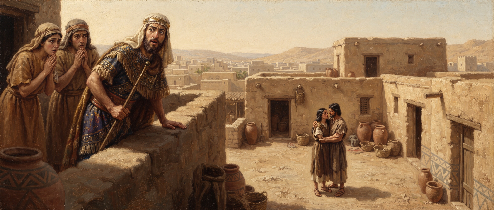

Genesis
Chapter Twenty-Six
King James Version
And there was a famine in the land, beside the first famine that was in the days of Abraham. And Isaac went unto Abimelech king of the Philistines unto Gerar. 2And the LORD appeared unto him, and said, Go not down into Egypt; dwell in the land which I shall tell thee of: 3Sojourn in this land, and I will be with thee, and will bless thee; for unto thee, and unto thy seed, I will give all these countries, and I will perform the oath which I sware unto Abraham thy father; 4And I will make thy seed to multiply as the stars of heaven, and will give unto thy seed all these countries; and in thy seed shall all the nations of the earth be blessed; 5Because that Abraham obeyed my voice, and kept my charge, my commandments, my statutes, and my laws.
6And Isaac dwelt in Gerar: 7And the men of the place asked him of his wife; and he said, She is my sister: for he feared to say, She is my wife; lest, said he, the men of the place should kill me for Rebekah; because she was fair to look upon.
8And it came to pass, when he had been there a long time, that Abimelech king of the Philistines looked out at a window, and saw, and, behold, Isaac was sporting with Rebekah his wife. 9And Abimelech called Isaac, and said, Behold, of a surety she is thy wife: and how saidst thou, She is my sister? And Isaac said unto him, Because I said, Lest I die for her. 10And Abimelech said, What is this thou hast done unto us? one of the people might lightly have lien with thy wife, and thou shouldest have brought guiltiness upon us. 11And Abimelech charged all his people, saying, He that toucheth this man or his wife shall surely be put to death.
12Then Isaac sowed in that land, and received in the same year an hundredfold: and the LORD blessed him. 13And the man waxed great, and went forward, and grew until he became very great: 14For he had possession of flocks, and possession of herds, and great store of servants: and the Philistines envied him. 15For all the wells which his father's servants had digged in the days of Abraham his father, the Philistines had stopped them, and filled them with earth. 16And Abimelech said unto Isaac, Go from us; for thou art much mightier than we.
17And Isaac departed thence, and pitched his tent in the valley of Gerar, and dwelt there. 18And Isaac digged again the wells of water, which they had digged in the days of Abraham his father; for the Philistines had stopped them after the death of Abraham: and he called their names after the names by which his father had called them. 19And Isaac's servants digged in the valley, and found there a well of springing water. 20And the herdmen of Gerar did strive with Isaac's herdmen, saying, The water is ours: and he called the name of the well Esek; because they strove with him. 21And they digged another well, and strove for that also: and he called the name of it Sitnah. 22And he removed from thence, and digged another well; and for that they strove not: and he called the name of it Rehoboth; and he said, For now the LORD hath made room for us, and we shall be fruitful in the land.
23And he went up from thence to Beersheba. 24And the LORD appeared unto him the same night, and said, I am the God of Abraham thy father: fear not, for I am with thee, and will bless thee, and multiply thy seed for my servant Abraham's sake. 25And he builded an altar there, and called upon the name of the LORD, and pitched his tent there: and there Isaac's servants digged a well.
26Then Abimelech went to him from Gerar, and Ahuzzath one of his friends, and Phichol the chief captain of his army. 27And Isaac said unto them, Wherefore come ye to me, seeing ye hate me, and have sent me away from you? 28And they said, We saw certainly that the LORD was with thee: and we said, Let there now be an oath betwixt us, even betwixt us and thee, and let us make a covenant with thee; 29That thou wilt do us no hurt, as we have not touched thee, and as we have done unto thee nothing but good, and have sent thee away in peace: thou art now the blessed of the LORD. 30And he made them a feast, and they did eat and drink. 31And they rose up betimes in the morning, and sware one to another: and Isaac sent them away, and they departed from him in peace.
32And it came to pass the same day, that Isaac's servants came, and told him concerning the well which they had digged, and said unto him, We have found water. 33And he called it Shebah: therefore the name of the city is Beersheba unto this day.
34And Esau was forty years old when he took to wife Judith the daughter of Beeri the Hittite, and Bashemath the daughter of Elon the Hittite: 35Which were a grief of mind unto Isaac and Rebekah.
6And Isaac dwelt in Gerar: 7And the men of the place asked him of his wife; and he said, She is my sister: for he feared to say, She is my wife; lest, said he, the men of the place should kill me for Rebekah; because she was fair to look upon.

12Then Isaac sowed in that land, and received in the same year an hundredfold: and the LORD blessed him. 13And the man waxed great, and went forward, and grew until he became very great: 14For he had possession of flocks, and possession of herds, and great store of servants: and the Philistines envied him. 15For all the wells which his father's servants had digged in the days of Abraham his father, the Philistines had stopped them, and filled them with earth. 16And Abimelech said unto Isaac, Go from us; for thou art much mightier than we.
17And Isaac departed thence, and pitched his tent in the valley of Gerar, and dwelt there. 18And Isaac digged again the wells of water, which they had digged in the days of Abraham his father; for the Philistines had stopped them after the death of Abraham: and he called their names after the names by which his father had called them. 19And Isaac's servants digged in the valley, and found there a well of springing water. 20And the herdmen of Gerar did strive with Isaac's herdmen, saying, The water is ours: and he called the name of the well Esek; because they strove with him. 21And they digged another well, and strove for that also: and he called the name of it Sitnah. 22And he removed from thence, and digged another well; and for that they strove not: and he called the name of it Rehoboth; and he said, For now the LORD hath made room for us, and we shall be fruitful in the land.
23And he went up from thence to Beersheba. 24And the LORD appeared unto him the same night, and said, I am the God of Abraham thy father: fear not, for I am with thee, and will bless thee, and multiply thy seed for my servant Abraham's sake. 25And he builded an altar there, and called upon the name of the LORD, and pitched his tent there: and there Isaac's servants digged a well.
26Then Abimelech went to him from Gerar, and Ahuzzath one of his friends, and Phichol the chief captain of his army. 27And Isaac said unto them, Wherefore come ye to me, seeing ye hate me, and have sent me away from you? 28And they said, We saw certainly that the LORD was with thee: and we said, Let there now be an oath betwixt us, even betwixt us and thee, and let us make a covenant with thee; 29That thou wilt do us no hurt, as we have not touched thee, and as we have done unto thee nothing but good, and have sent thee away in peace: thou art now the blessed of the LORD. 30And he made them a feast, and they did eat and drink. 31And they rose up betimes in the morning, and sware one to another: and Isaac sent them away, and they departed from him in peace.
32And it came to pass the same day, that Isaac's servants came, and told him concerning the well which they had digged, and said unto him, We have found water. 33And he called it Shebah: therefore the name of the city is Beersheba unto this day.
34And Esau was forty years old when he took to wife Judith the daughter of Beeri the Hittite, and Bashemath the daughter of Elon the Hittite: 35Which were a grief of mind unto Isaac and Rebekah.
Study: The Same Wells, The Same Fear
A famine sends Isaac to Gerar, the same region his father fled to Egypt from during an earlier famine back in chapter 12. This time, though, God speaks to Isaac directly and tells him plainly not to go down to Egypt at all — stay in the land, and the same covenant sworn to Abraham will hold for him too, nearly word for word: the stars, the nations blessed through his seed, the land itself. It's the first time in the whole book God addresses Isaac in his own right rather than through his father.
What Isaac does almost immediately afterward is startling given everything he's presumably grown up hearing about: he tells the men of Gerar that Rebekah is his sister, the exact same fear, the exact same half-truth his father told twice, in Egypt and in this very same region with an Abimelech of the same title. He isn't repeating a story he heard secondhand. This is a man who watched both of those episodes unfold in his own family, and does it anyway.
This time discovery comes without a dream or a plague — just Abimelech happening to glance out a window and see something between them that no brother and sister would do.
A note on sourcing, consistent with how this study has handled thin chapters before: I searched specifically for anything Brother Branham said about this repeated deception, the well disputes, or Isaac's harvest in this chapter, and came back with nothing usable. Where his own teaching doesn't reach, this study doesn't reach past it either — what follows is a plain reading of the text on its own.
The rest of the chapter turns from personal failure to quiet, sustained provocation. Isaac's prosperity draws real envy, and the Philistines respond by filling in every well his father's servants had dug decades earlier — not stealing them outright, just spitefully destroying something useful that took real labor to build. Isaac's response is neither confrontation nor retreat into bitterness. He simply re-digs them, one at a time, giving each one back its old name. When the herdsmen of Gerar pick a fight over the next two wells, Isaac doesn't fight for them either — he names them for the strife itself (Esek, "contention"; Sitnah, "hostility") and moves on, until he finds room to dig one nobody contests, and names that one Rehoboth: "the LORD hath made room for us."
That pattern of patient yielding is rewarded almost immediately. God appears to him again at Beersheba the same night, repeating the same reassurance given to Abraham, and Isaac responds the same way his father always did — with an altar. Then, remarkably, Abimelech comes to him seeking peace, having watched the LORD's evident blessing on a man he'd just driven out of his territory for being too successful. The whole scene — the wary king, the covenant sworn, the feast, the well discovered on the very same day — mirrors the treaty at the end of chapter 21 closely enough that it reads less like a new event than the same pattern proving itself true a second time, one generation later.
The chapter closes on a small, quiet note that will matter more later: Esau marries two Hittite women, and it grieves both his parents. Nothing more is said about it here, but it's the first crack in a family relationship that the next several chapters are going to split wide open.